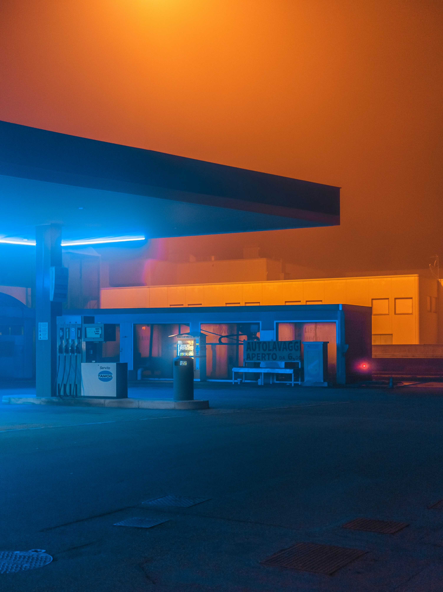

Gallery


I have a deep passion for photography and art, finding joy in capturing moments that tell a story. Whether it's the play of light, candid emotions, or the beauty in everyday scenes, I love framing life through my lens. Photography allows me to express creativity and see the world from unique perspectives. I enjoy experimenting with different styles, from portraits to landscapes, always aiming to evoke emotion and meaning in each shot. Art and photography inspire me to slow down, observe details, and appreciate the simple yet profound beauty that surrounds us every day.
